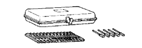

FRONT DRIVE SHAFT ASSEMBLY > REASSEMBLY > Preparation
SST

09240-00020
Wire Gauge Set
09521-24010
Drive Shaft Boot Clamping Tool
09527-10011
Rear Axle Shaft Bearing Remover
EQUIPMENT
Dial indicator
-
Torque wrench
-
RECOMMENDED TOOLS
09905-00012
Snap Ring No. 1 Expander
-